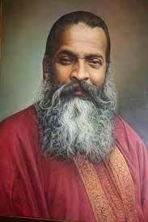

“Music is not a profession, it is a sacred path to the soul.”
— Pandit Vishnu Digambar Paluskar

Introduction
Pandit Vishnu Digambar Paluskar (1872–1931) was not merely a musician, he was a visionary reformer who transformed the way Hindustani classical music was perceived, taught, and respected in India.
In an era when music was confined to temples and royal courts, Paluskar brought it to the common people, giving it dignity, structure, and a sacred purpose.
He believed that music was divine, not entertainment, a medium to connect with the Almighty.
Early Life and Challenges
Born on August 18, 1872, in Kurundwad, a small town in Maharashtra, Vishnu Digambar was the son of a kirtankar, a traditional devotional singer. His life took a tragic turn when, at the age of ten, he lost his eyesight due to an accident during a religious procession.Despite this immense hardship, his spirit remained unbroken. His keen sense of hearing and devotion to music grew stronger, guiding him toward a destiny that would redefine Indian music forever.
Musical Training and Journey
At 15, he became a disciple of Pandit Balakrishnabuva Ichalkaranjikar, a stalwart of the Gwalior Gharana. Under his tutelage, Vishnu Digambar mastered the techniques of khayal, dhrupad, and bhajan singing. He developed a unique style, blending classical precision with devotional expression, making music both soulful and spiritual.By the late 1880s, Paluskar began performing across India. His renditions of bhajans like “Raghupati Raghav Raja Ram” and “Vande Mataram” stirred both devotion and patriotism among listeners.
Foundation of Gandharva Mahavidyalaya
In 1901, he achieved one of his greatest milestones, the founding of the Gandharva Mahavidyalaya in Lahore (now in Pakistan). This was the first music school in India to offer systematic training in Hindustani classical music.His vision was radical for the time, he freed music education from royal patronage and made it accessible to all, regardless of caste or class. He believed music should be taught with the same respect as philosophy or science.
Later, another branch of the Gandharva Mahavidyalaya was opened in Mumbai, continuing his mission to bring music to the masses.